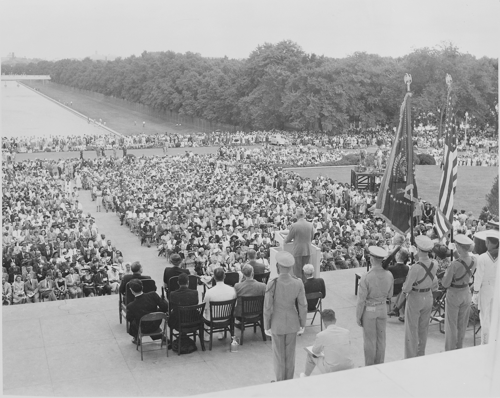

Directions: Fill in the chart as we build the groundwork piece by piece. Keep this page in your notebook. You will use it again on the review day before the unit test.

| Piece of groundwork | What it was | Kind: law, institution, constituency, or tactic | The evidence |
|---|---|---|---|
| Jim Crow and disfranchisement | |||
| The church, the colleges, the press | |||
| The NAACP and its lawyers | |||
| Smith, 1944, and Shelley, 1948 | |||
| The war: service, Double V, and migration | |||
| Truman: the report and the order, 1947 and 1948 |
The groundwork in one sentence. Finish this sentence in your own words, using at least two rows of the chart as evidence. Before the famous decade began, Black Americans had already...
| Piece of groundwork | What it was | Kind: law, institution, constituency, or tactic | The evidence |
|---|---|---|---|
| Jim Crow and disfranchisement | Segregation by statute and custom across the South, upheld in Plessy in 1896, with the ballot guarded by the poll tax, the literacy test, and the white primary. | The system the groundwork answered | In 1940 about three in every hundred Black adults in the South were registered to vote. |
| The church, the colleges, the press | Institutions Black Americans owned: churches with independent pulpits, colleges training professionals, and newspapers such as the Defender and the Courier speaking nationally. | Institution | The church held buildings, budgets, and a weekly audience no white official controlled. |
| The NAACP and its lawyers | Founded in 1909, the association lobbied Congress, published The Crisis, and ran a dues funded legal program case by case. | Institution and tactic | Thurgood Marshall of its legal staff argued Smith v. Allwright in 1944. |
| Smith, 1944, and Shelley, 1948 | The Supreme Court ended the white primary as state action under the Fifteenth Amendment and made restrictive covenants unenforceable as state action under the Fourteenth. | Law | In Shelley the Court held that the action of the state courts cannot stand. |
| The war: service, Double V, and migration | About a million Black servicemen, the Double V demand for victory abroad and at home, and a second migration wave that doubled northern Black populations. | Constituency and tactic | Chicago's Black population rose from about 234,000 in 1940 to about 492,000 in 1950. |
| Truman: the report and the order, 1947 and 1948 | To Secure These Rights named lynching, disfranchisement, and segregation as federal business, and Executive Order 9981 desegregated the armed forces on July 26, 1948. | Law and federal agenda | The order declared equality of treatment and opportunity without regard to race, color, religion or national origin. |
The groundwork in one sentence. Strong answers name the build in both halves of the lesson question. Before the famous decade began, Black Americans had already built institutions of their own, a church, colleges, a press, and a national association with lawyers, and had already won the end of the white primary, the end of covenant enforcement, a fair employment precedent, a presidential report on their side, and the desegregation of the armed forces.